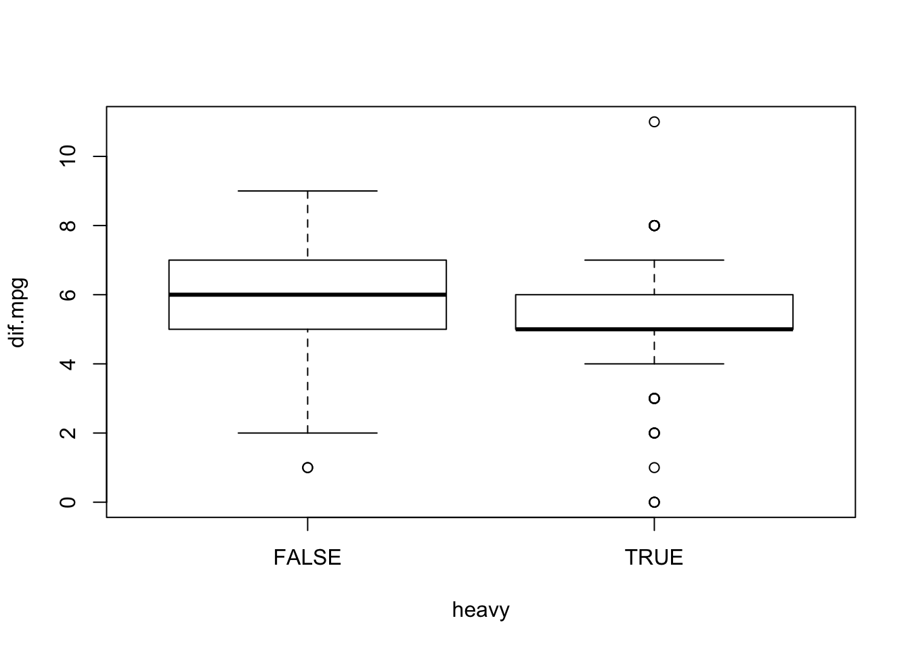

Chapter 13 Comparing Two Samples
13.1 Student Learning Objectives
The next 3 chapters deal with the statistical inference associated with the relation between two variables. The relation corresponds to the effect of one variable on the distribution of the other. The variable whose distribution is being investigated is called the response. The variable which may have an effect on the distribution of the response is called the explanatory variable.
In this section we consider the case where the explanatory variable is a factor with two levels. This factor splits the sample into two sub-samples. The statistical inference compares between the distributions of the response variable in the two sub-samples. The statistical inference involves point estimation, confidence intervals, and hypothesis testing. R functions may be used in order to carry out the statistical inference. By the end of this chapter, the student should be able to:
Define estimators, confidence intervals, and tests for comparing the distribution of a numerical response between two sub-populations.
Apply the function “
t.test” in order to investigate the difference between the expectations of the response variable in the two sub-samples.Apply the function “
var.test” in order to investigate the ratio between the variances of the response variable in the two sub-samples.
13.2 Comparing Two Distributions
Up until this point in the book we have been considering tools for the investigation of the characteristics of the distribution of a single measurement. In most applications, however, one is more interested in inference regarding the relationships between several measurements. In particular, one may want to understand how the outcome of one measurement effects the outcome of another measurement.
A common form of a mathematical relation between two variables is when one of the variables is a function of the other. When such a relation holds then the value of the first variably is determined by the value of the second. However, in the statistical context relations between variables are more complex. Typically, a statistical relation between variables does not make one a direct function of the other. Instead, the distribution of values of one of the variables is affected by the value of the other variable. For a given value of the second variable the first variable may have one distribution, but for a different value of the second variable the distribution of the first variable may be different. In statistical terminology the second variable in this setting is called an explanatory variable and the first variable, with a distribution affected by the second variable, is called the response.
As an illustration of the relation between the response and the explanatory variable consider the following example. In a clinical trial, which is a precondition for the marketing of a new medical treatment, a group of patients is randomly divided into a treatment and a control sub-groups. The new treatment is anonymously administered to the treatment sub-group. At the same time, the patients in the control sub-group obtain the currently standard treatment. The new treatment passes the trial and is approved for marketing by the Health Authorities only if the response to the medical intervention is better for the treatment sub-group than it is for the control sub-group. This treatment-control experimental design, in which a response is measured under two experimental conditions, is used in many scientific and industrial settings.
In the example of a clinical trial one may identify two variables. One variable measures the response to the medical intervention for each patient that participated in the trial. This variable is the response variable, the distribution of which one seeks to investigate. The other variable indicates to which sub-group, treatment or control, each patient belongs. This variable is the explanatory variable. In the setting of a clinical trial the explanatory variable is a factor with two levels, “treatment” and “control”, that splits the sample into two sub-samples. The statistical inference compares the distribution of the response variable among the patients in the treatment sub-sample to the distribution of the response among the patients in the control sub-group.
The analysis of experimental settings such as the treatment-control trial ia a special case that involves the investigation of the effect an explanatory variable may have on the response variable. In this special case the explanatory variable is a factor with two distinct levels. Each level of the factor is associate with a sub-sample, either treatment or control. The analysis seeks to compare the distribution of the response in one sub-sample with the distribution in the other sub-sample. If the response is a numeric measurement then the analysis may take the form of comparing the response’s expectation in one sub-group to the expectation in the other. Alternatively, the analysis may involve comparing the variance. In a different case, if the response is the indicator of the occurrence of an event then the analysis may compare two probabilities, the probability of the event in the treatment group to the probability of the same event in the control group.
In this chapter we deal with statistical inference that corresponds to the comparison of the distribution of a numerical response variable between two sub-groups that are determined by a factor. The inference includes testing hypotheses, mainly the null hypothesis that the distribution of the response is the same in both subgroups versus the alternative hypothesis that the distribution is not the same. Another element in the inference is point estimation and confidence intervals of appropriate parameters.
In the next chapter we will consider the case where the explanatory variable is numeric and in the subsequent chapter we describe the inference that is used in the case that the response is the indicator of the occurrence of an event.
13.3 Comparing the Sample Means
In this section we deal with the issue of statistical inference when comparing the expectation of the response variable in two sub-samples. The inference is used in order to address questions such as the equality of the two expectations to each other and, in the case they are not equal, the assessment of the difference between the expectations. For the first question one may use statistical hypothesis testing and for the assessment one may use point estimates and/or confidence intervals.
In the first subsection we provide an example of a test of the hypothesis that the expectations are equal. A confidence interval for the difference between expectations is given in the output of the report of the R function that applies the test. The second subsection considers the construction of the confidence interval and the third subsection deals with the theory behind the statistical test.
13.3.1 An Example of a Comparison of Means
In order to illustrate the statistical inference that compars two expectations let us return to an example that was considered in Chapter 12. The response of interest is the difference in miles-per-gallon between driving in highway conditions and driving in city conditions. This response is produced as the difference between the variable “cars$highway.mpg” and the variable “cars$city.mpg”. It is stored in the object “dif.mpg”, which is a numerical sequence:
cars <- read.csv("_data/cars.csv")
dif.mpg <- cars$highway.mpg - cars$city.mpgThe object “heavy” was defined in the previous chapter as a sequence with logical components. A component had the value “TRUE” if the curb weight of the car type associated with this component was above the median level of 2,414 lb. The component obtained the value “FALSE” if the curb weight did not exceed that level. The logical sequence “heavy” was used in order to select the subsequences associated with each weight sub-group. Statistical inference was applied separately to each subsequence.
In the current analysis we want to examine directly the relation between the response variable “dif.mpg” and an explanatory factor variable “heavy”. In order to do so we redefine the variable “heavy” to be a factor:
heavy <- factor(cars$curb.weight > 2414)The variable “curb.weight” is numeric and the expression “cars$curb.weight > 2414” produces a sequence with logical “TRUE” or “FALSE” components. This sequence is not a factor. In order to produce a factor we apply the function “factor” to the sequence. The function “factor” transforms its input into a factor. Specifically, the application of this function to a sequence with logical components produces a factor with two levels that are given the names “TRUE” and “FALSE”62.
We want to examine the relation between the response variable “dif.mpg” and the explanatory factor “heavy”. Towards that end we produce a plot of the relation with the function “plot” and test for the equality of the expectations of the response with the function “t.test”. First the plot:
plot(dif.mpg~heavy)
Observe that the figure contains two box plots, one associated with the level “FALSE” of the explanatory factor and the other with the level “TRUE” of that factor. The box plots describe the distribution of the response variable for each level of the explanatory factor. Overall, the distribution of the response for heavier cars (cars associated with the level “TRUE”) tends to obtain smaller values than the distribution of the response for lighter cars (cars associated with the level “FALSE”).
The input to the function “plot” is a formula expression of the form: “response\(\;\tilde{}\;\)explanatory.variable”. A formula identifies the role of variables. The variable to the left of the tilde character (\(\;\tilde{}\;\)) in a formula is the response and the variable to the right is the explanatory variable. In the current case the variable “dif.mpg” is the response and the variable “heavy” is the explanatory variable.
Let us use a formal test in order to negate the hypothesis that the expectation of the response for the two weight groups is the same. The test is provided by the application of the function “t.test” to the formula “dif.mpg\;\tilde{}\;heavy”:
t.test(dif.mpg~heavy)##
## Welch Two Sample t-test
##
## data: dif.mpg by heavy
## t = 2.42552, df = 191.561, p-value = 0.016214
## alternative hypothesis: true difference in means is not equal to 0
## 95 percent confidence interval:
## 0.10291504 0.99893152
## sample estimates:
## mean in group FALSE mean in group TRUE
## 5.8058252 5.2549020The function “t.test”, when applied to a formula that describes the relation between a numeric response and a explanatory factor with two level, produces a special form of a \(t\)-test that is called the Welch Two Sample \(t\)-test. The statistical model associated with this test assumes the present of two independent sub-samples, each associated with a level of the explanatory variable. The relevant parameters for this model are the two expectations and the two variances associated with the sub-samples.
The hypotheses tested in the context of the Welch test are formulated in terms of the difference between the expectation of the first sub-sample and the expectation of the second sub-sample. In the default application of the test the null hypothesis is that the difference is equal to 0 (or, equivalently, that the expectations are equal to each other). The alternative is that the difference is not equal to 0 (hence, the expectations differ).
The test is conducted with the aid of a test statistic. The computed value of the test statistic in this example is “t = 2.4255”. Under the null hypothesis the distribution of the test statistic is (approximately) equal to the \(t\)-distribution on “df = 191.561” degrees of freedom. The resulting \(p\)-value is “p-value = 0.01621”. Since the computed \(p\)-value is less than 0.05 we reject the null hypothesis with a significance level of 5% and declare that the expectations are not equal to each other.
The bottom part of the report presents points estimates and a confidence interval. The point estimates of the two expectations are the sub-samples averages. The estimated value of the expected difference in miles-per-gallon for lighter cars is 5.805825, which is the average of the measurements associated with the level “FALSE”. The estimated value of the expected difference for heavier cars is 5.254902, the average of measurements associated with the level “TRUE”.
The point estimate for the difference between the two expectations is the difference between the two sample averages: \(5.805825 - 5.254902 = 0.550923\). A confidence interval for the difference between the expectations is reported under the title “95 percent confidence interval:”. The computed value of the confidence interval is \([0.1029150, 0.9989315]\).
In the rest of this section we describe the theory behind the construction of the confidence interval and the statistical test.
13.3.2 Confidence Interval for the Difference
Consider the statistical model that is used for the construction of the confidence interval. The main issue is that the model actually deals with two populations rather than one population. In previous theoretical discussions we assumed the presence of a single population and a measurement taken for the members of this population. When the measurement was considered as a random variable it was denoted by a capital Latin letter such as \(X\). Of concern were characteristics of the distribution of \(X\) such as \(E(X)\), the expectation of \(X\), and \(V(X)\), the variance.
In the current investigation two populations are considered. One population is the sub-population associated with the first level of the factor and the other population is associated with the second level. The measurement is taken for the members of both sub-populations. However, the measurement involves two random variables, one associated with the first sub-population and the other associated with the second sub-population. Moreover, the distribution of the measurement for one population may differ from the distribution for the other population. We denote the random variable associated with the first sub-population by \(X_a\) and the one associated with the other sub-population by \(X_b\).
Consider the example in which the measurement is the difference in miles-per-gallon between highway and city driving conditions. In this example \(X_a\) is the measurement for cars with curb weight up to 2,414 lb and \(X_b\) is the same measurement for cars with curb weight above that threshold.
The random variables \(X_a\) and \(X_b\) may have different distributions. Consequently, the characteristics of their distributions may also vary. Denote by \(E(X_a)\) and \(E(X_b)\) the expectations of the first and second random variable, respectively. Likewise, \(V(X_a)\) and \(V(X_b)\) are the variances of the two random variables. These expectations and variances are subjects of the statistical inference.
The sample itself may also be divided into two sub-samples according to the sub-population each observation originated from. In the example, one sub-sample is associated with the lighter car types and the other sub-sample with the heavier ones. These sub-samples can be used in order to make inference with respect to the parameters of \(X_a\) and \(X_b\), respectively. For example, the average of the observations from first sub-sample, \(\bar X_a\), can serve as the estimator of the of the expectation \(E(X_a)\) and the second sub-sample‘s average \(\bar X_b\) may be used in order to estimate \(E(X_b)\).
Our goal in this section is to construct a confidence interval for the difference in expectations \(E(X_a)-E(X_b)\). A natural estimator for this difference in expectations is the difference in averages \(\bar X_a- \bar X_b\). The average difference will also serve as the basis for the construction of a confidence interval.
Recall that the construction of the confidence interval for a signal expectation was based on the sample average \(\bar X\). We exploited the fact that the distribution of \(Z = (\bar X - E(X)/\sqrt{V(X)/n}\), the standardized sample average, is approximately standard Normal. From this Normal approximation we obtained an approximate 0.95 probability for the event
\[\big\{-1.96 \cdot \sqrt{V(X)/n} \leq \bar X - E(X) \leq 1.96 \cdot \sqrt{V(X)/n}\big\}\;,\] where \(1.96 = \mbox{\texttt{qnorm(0.975)}}\) is the 0.975-percentile of the standard Normal distribution63. Substituting the estimator \(S\) for the unknown variance of the measurement and rewriting the event in a format that puts the expectation \(E(X)\) in the center, between two boundaries, produced the confidence interval:
\[\bar X \pm 1.96 \cdot S/\sqrt{n}\;.\]
Similar considerations can be used in the construction of a confidence interval for the difference between expectations on the basis of the difference between sub-sample averages. The deviation \(\{\bar X_a- \bar X_b\} - \{E(X_a)- E(X_b)\}\) between the difference of the averages and the difference of the expectations that they estimate can be standardized. By the Central Limit Theorem one may obtain that the distribution of the standardized deviation is approximately standard Normal.
Standardization is obtained by dividing by the standard deviation of the estimator. In the current setting the estimator is the difference between the averages. The variance of the difference is given by
\[V(\bar X_a- \bar X_b) = V(\bar X_a) + V(\bar X_b) = \frac{V(X_a)}{n_a} + \frac{V(X_b)}{n_b}\;,\] where \(n_a\) is the size of the sub-sample that produces the sample average \(\bar X_a\) and \(n_b\) is the size of the sub-sample that produces the sample average \(\bar X_b\). Observe that both \(\bar X_a\) and \(\bar X_b\) contribute to the variability of the difference. The total variability is the sum of the two contributions64. Finally, we use the fact that the variance of the sample average is equal to he variance of a single measurement divided by the sample size. This fact is used for both averages in order to obtain a representation of the variance of the estimator in terms of the variances of the measurement in the two sub-population and the sizes of the two sub-samples.
The standardized deviation takes the form:
\[Z = \frac{\bar X_a- \bar X_b - \{E(X_a)- E(X_b)\}}{\sqrt{V(X_a)/n_a +V(X_b)/n_b}}\;.\] When both sample sizes \(n_a\) and \(n_b\) are large then the distribution of \(Z\) is approximately standard Normal. As a corollary from the Normal approximation one gets that \(P(-1.96 \leq Z \leq 1.96) \approx 0.95\).
The values of variances \(V(X_a)\) and \(V(X_b)\) that appear in the definition of \(Z\) are unknown. However, these values can be estimated using the sub-samples variances \(S_a^2\) and \(S_b^2\). When the size of both sub-samples is large then these estimators will produce good approximations of the unknown variances:
\[V(X_a) \approx S_a^2,\; V(X_b) \approx S_b^2\quad \Longrightarrow \quad\frac{V(X_a)}{n_a} + \frac{V(X_b)}{n_b} \approx \frac{S_a^2}{n_a} + \frac{S_b^2}{n_b}\;.\]
The event \(\{-1.96 \leq Z \leq 1.96\}\) may be approximated by the event:
\[\Bigg\{-1.96 \cdot \sqrt{\frac{S_a^2}{n_a} + \frac{S_b^2}{n_b}} \leq \bar X_a- \bar X_b - \{E(X_a)- E(X_b)\} \leq 1.96 \cdot \sqrt{\frac{S_a^2}{n_a} + \frac{S_b^2}{n_b}}\Bigg\}\;,\] The approximation results from the use of the sub-sample variances as a substitute for the unknown variances of the measurement in the two sub-populations. When the two sample sizes \(n_a\) and \(n_b\) are large then the probability of the given event will also be approximately equal to 0.95.
Finally, reexpressing the least event in a format that puts the parameter \(E(X_a)- E(X_b)\) in the center will produce the confidence interval with boundaries of the form:
\[\bar X_a- \bar X_b \pm 1.96 \cdot \sqrt{S_a^2/n_a + S_b^2/n_b}\]
In order to illustrate the computations that are involved in the construction of a confidence interval for the difference between two expectations let us return to the example of difference in miles-per-gallon for lighter and for heavier cars. Compute the two sample sizes, sample averages, and sample variances:
table(heavy)## heavy
## FALSE TRUE
## 103 102tapply(dif.mpg,heavy,mean)## FALSE TRUE
## 5.8058252 5.2549020tapply(dif.mpg,heavy,var)## FALSE TRUE
## 2.0207500 3.2611143Observe that there 103 lighter cars and 102 heavier ones. These counts were obtained by the application of the function “table” to the factor “heavy”. The lighter cars are associated with the level “FALSE” and heavier cars are associated with the level “TRUE”.
The average difference in miles-per-gallon for lighter cars is 5.805825 and the variance is 2.020750. The average difference in miles-per-gallon for heavier cars is 5.254902 and the variance is 3.261114. These quantities were obtained by the application of the functions “mean” or “var” to the values of the variable “dif.mpg” that are associated with each level of the factor “heavy”. The application was carried out using the function “tapply”.
The computed values of the means are equal to the vales reported in the output of the application of the function “t.test” to the formula “dif.mpg\;\tilde{}\;heavy”. The difference between the averages is \(\bar x_a - \bar x_b = 5.805825 - 5.254902 = 0.550923\). This value is the center of the confidence interval. The estimate of the standard deviation of the difference in averages is:
\[\sqrt{s_a^2/n_a + s_b^2/n_b} = \sqrt{2.020750/103 + 3.261114/102} = 0.227135\;.\] Therefore, the confidence interval for the difference in expectations is
\[\bar x_a- \bar x_b \pm 1.96 \cdot \sqrt{\frac{s_a^2}{n_a} + \frac{s_b^2}{n_b}} = 0.550923 \pm 1.96 \cdot 0.227135 = [0.1057384,0.9961076]\;,\] which is (essentially) the confidence interval that is presented in the report65.
13.3.3 The t-Test for Two Means
The statistical model that involves two sub-populations may be considered also in the context of hypothesis testing. Hypotheses can be formulated regarding the relations between the parameters of the model. These hypotheses can be tested using the data. For example, in the current application of the \(t\)-test, the null hypothesis is \(H_0: E(X_a) = E(X_b)\) and the alternative hypothesis is \(H_1: E(X_a) \not= E(X_b)\). In this subsection we explain the theory behind this test.
Recall that the construction of a statistical test included the definition of a test statistic and the determination of a rejection region. The null hypothesis is rejected if, and only if, the test statistic obtains a value in the rejection region. The determination of the rejection region is based on the sampling distribution of the test statistic under the null hypothesis. The significance level of the test is the probability of rejecting the null hypothesis (i.e., the probability that the test statistic obtains a value in the rejection region) when the null hypothesis is correct (the distribution of the test statistic is the distribution under the null hypothesis). The significance level of the test is set at a given value, say 5%, thereby restricting the size of the rejection region.
In the previous chapter we consider the case where there is one population. For review, consider testing the hypothesis that the expectation of the measurement is equal to zero (\(H_0: E(X) = 0\)) against the alternative hypothesis that it is not (\(H_1: E(X) \not = 0\)). A sample of size \(n\) is obtained from this population. Based on the sample one may compute a test statistic:
\[T = \frac{\bar X - 0}{S/\sqrt{n}} = \frac{\bar X}{S/\sqrt{n}}\;,\] where \(\bar X\) is the sample average and \(S\) is the sample standard deviation. The rejection region of this test is \(\{|T| > \mbox{\texttt{qt(0.975,n-1)}}\}\), for “qt(0.975,n-1)” the 0.975-percentile of the \(t\)-distribution on \(n-1\) degrees of freedom.
Alternatively, one may compute the \(p\)-value and reject the null hypothesis if the \(p\)-value is less than 0.05. The \(p\)-value in this case is equal to \(P(|T| > |t|)\), where \(t\) is the computed value of the test statistic. The distribution of \(T\) is the \(t\)-distribution of \(n-1\) degrees of freedom.
A similar approach can be used in the situation where two sub-population are involved and one wants to test the null hypothesis that the expectations are equal versus the alternative hypothesis that they are not. The null hypothesis can be written in the form \(H_0:E(X_a) - E(X_b) = 0\) with the alternative hypothesis given as \(H_1:E(X_a) - E(X_b) \not = 0\).
It is natural to base the test static on the difference between sub-samples averages \(\bar X_a - \bar X_b\). The \(T\) statistic is the ratio between the deviation of the estimator from the null value of the parameter, divided by the (estimated) standard deviation of the estimator. In the current setting the estimator is difference in sub-samples averages \(\bar X_a - \bar X_b\), the null value of the parameter, the difference between the expectations, is 0, and the (estimated) standard deviation of the estimator is \(\sqrt{S_a^2/n_a + S_b^2/n_b}\). It turns out that the test statistic in the current setting is:
\[T = \frac{\bar X_a - \bar X_b - 0}{ \sqrt{S_a^2/n_a + S^2_b/n_b}} = \frac{\bar X_a - \bar X_b}{ \sqrt{S_a^2/n_a + S^2_b/n_b}}\;.\]
Consider as a measurement the difference in miles-per-gallon. Define the sub-population \(a\) to the lighter cars and the sub-population \(b\) to be the heavier cars. Recall that the sub-sample sizes are \(n_a =103\) and \(n_b=102\). Also, the sub-sample averages are \(\bar x_a = 5.805825\) and \(\bar x_b =5.254902\), and the sub-sample variances are \(s^2_a = 2.020750\) and \(s_b^2 = 5.254902\).
In order to calculate the observed value of the test statistic we use once more the fact that the difference between the averages is \(\bar x_a - \bar x_b = 5.805825 - 5.254902 = 0.550923\) and the estimated value of the standard deviation of the sub-samples average difference is:
\[\sqrt{s_a^2/n_a + s_b^2/n_b} = \sqrt{2.020750/103 + 3.261114/102} = 0.227135\;.\] It follows that the observed value of the \(T\) statistic is
\[t = \frac{\bar x_a - \bar x_b}{\sqrt{s_a^2/n_a + s_b^2/n_b}} = \frac{0.550923}{0.227135} = 2.425531\;,\] which, after rounding up, is equal to the value presented in the report that was produced by the function “t.test”.
The \(p\)-value is computed as the probability of obtaining values of the test statistic more extreme than the value that was obtained in our data. The computation is carried out under the assumptions of the null hypothesis. The limit distribution of the \(T\) statistic, when both sub-sample sizes \(n_a\) and \(n_b\) are large, is standard Normal. In the case when the measurements are Normally distributed then a refined approximation of the distribution of the statistic is the \(t\)-distribution. Both the standard Normal and the \(t\)-distribution are symmetric about the origin.
The probability of obtaining a value in either tails for a symmetric distribution is equal to twice the probability of obtaining a value in the upper tail:
\[P( |T| > 2.4255) = 2 \times P( T > 2.4255) = 2 \times \big [1 - P( T \leq 2.4255)\big ]\;.\]
The function “t.test” computes the \(p\)-value using the \(t\)-distribution. For the current data, the number of degrees of freedom that are used in this approximation66 is df = 191.561. When we apply the function “pt” for the computation of the cumulative probability of the \(t\)-distribution we get:
2*(1-pt(2.4255,191.561))## [1] 0.016214576which (after rounding) is equal to the reported \(p\)-value of 0.01621. This \(p\)-value is less than 0.05, hence the null hypothesis is rejected in favor of the alternative hypothesis that assumes an effect of the weight on the expectation.
13.4 Comparing Sample Variances
In the previous section we discussed inference associated with the comparison of the expectations of a numerical measurement between two sub-population. Inference included the construction of a confidence interval for the difference between expectations and the testing of the hypothesis that the expectations are equal to each other.
In this section we consider a comparisons between variances of the measurement in the two sub-populations. For this inference we consider the ratio between estimators of the variances and introduce a new distribution, the \(F\)-distribution, that is associated with this ratio.
Assume, again, the presence of two sub-populations, denoted \(a\) and \(b\). A numerical measurement is taken over a sample. The sample can be divided into two sub-samples according to the sub-population of origin. In the previous section we were interested in inference regarding the relation between the expectations of the measurement in the two sub-populations. Here we are concerned with the comparison of the variances.
Specifically, let \(X_a\) be the measurement at the first sub-population and let \(X_b\) be the measurement at the second sub-population. We want to compare \(V(X_a)\), the variance in the first sub-population, to \(V(X_b)\), the variance in the second sub-population. As the basis for the comparison we may use \(S_a^2\) and \(S_b^2\), the sub-samples variances, which are computed from the observations in the first and the second sub-sample, respectively.
Consider the confidence interval for the ratio of the variances. In Chapter 11 we discussed the construction of the confidence interval for the variance in a single sample. The derivation was based on the sample variance \(S^2\) that serves as an estimator of the population variance \(V(X)\). In particular, the distribution of the random variable \((n-1)S^2/V(X)\) was identified as the chi-square distribution on \(n-1\) degrees of freedom67. A confidence interval for the variance was obtained as a result of the identification of a central region in the chi-square distribution that contains a pre-subscribed probability68.
In order to construct a confidence interval for the ratio of the variances we consider the random variable that is obtained as a ratio of the estimators of the variances:
\[\frac{S_a^2/V(X_a)}{S^2_b/V(X_b)} \sim F_{(n_a-1,n_b-1)}\;.\] The distribution of this random variable is denoted the \(F\)-distribution69. This distribution is characterized by the number of degrees of freedom associated with the estimator of the variance at the numerator and by the number of degrees of freedom associated with the estimator of the variance at the denominator. The number of degrees of freedom associated with the estimation of each variance is the number of observation used for the computation of the estimator, minus 1. In the current setting the numbers of degrees of freedom are \(n_a-1\) and \(n_b-1\), respectively.
The percentiles of the \(F\)-distribution can be computed in R using the function “qf”. For example, the 0.025-percentile of the distribution for the ratio between sample variances of the response for two sub-samples is computed by the expression “qf(0.025,dfa,dfb)”, where \(\mbox{\texttt{dfa}} = n_a - 1\) and \(\mbox{\texttt{dfb}} = n_b - 1\). Likewise, the 0.975-percentile is computed by the expression “qf(0.975,dfa,dfb)”. Between these two numbers lie 95% of the given \(F\)-distribution. Consequently, the probability that the random variable \(\{S_a^2/V(X_a)\}/\{S_b^2/V(X_b)\}\) obtains its values between these two percentiles is equal to 0.95:
\[\begin{aligned} \lefteqn{\frac{S_a^2/V(X_a)}{S_b^2/V(X_b)} \sim F_{(n_a-1,n_b-1)} \quad \Longrightarrow }\\ & P \big( \mbox{\texttt{qf(0.025,dfa,dfb)}} \leq {\textstyle \frac{S_a^2/V(X_a)}{S_b^2/V(X_b)}} \leq \mbox{\texttt{qf(0.975,dfa,dfb)}} \big) = 0.95\;.\end{aligned}\]
A confidence interval for the ratio between \(V(X_a)\) and \(V(X_b)\) is obtained by reformulation of the last event. In the reformulation, the ratio of the variances is placed in the center:
\[\Big\{\frac{S_a^2/S_b^2}{\mbox{\texttt{qf(0.975,dfa,fdb)}}} \leq \frac{V(X_a)}{V(X_b)} \leq \frac{S_a^2/S_b^2}{\mbox{\texttt{qf(0.025,dfa,dfb)}}}\Big\}\;.\] This confidence interval has a significance level of 95%.
Next, consider testing hypotheses regarding the relation between the variances. Of particular interest is testing the equality of the variances. One may formulate the null hypothesis as \(H_0: V(X_a)/V(X_b) = 1\) and test it against the alternative hypothesis \(H_1: V(X_a)/V(X_b) \not = 1\).
The statistic \(F = S_a^2/S_b^2\) can used in order to test the given null hypothesis. Values of this statistic that are either much larger or much smaller than 1 are evidence against the null hypothesis and in favor of the alternative hypothesis. The sampling distribution, under that null hypothesis, of this statistic is the \(F_{(n_a-1,n_b-1)}\) distribution. Consequently, the null hypothesis is rejected either if \(F < \mbox{\texttt{qf(0.025,dfa,dfb)}}\) or if \(F >\mbox{\texttt{qf(0.975,dfa,dfb)}}\), where \(\mbox{\texttt{dfa}} = n_a - 1\) and \(\mbox{\texttt{dfb}} = n_b - 1\). The significance level of this test is 5%.
Given an observed value of the statistic, the \(p\)-value is computed as the significance level of the test which uses the observed value as the threshold. If the observed value \(f\) is less than 1 then the \(p\)-value is twice the probability of the lower tail: \(2\cdot P(F < f)\). On the other hand, if \(f\) is larger than 1 one takes twice the upper tail as the \(p\)-value: \(2\cdot P(F > f) = 2\cdot [1-P(F \leq f)]\). The null hypothesis is rejected with a significance level of 5% if the \(p\)-value is less than 0.05.
In order to illustrate the inference that compares variances let us return to the variable “dif.mpg” and compare the variances associated with the two levels of the factor “heavy”. The analysis will include testing the hypothesis that the two variances are equal and an estimate and a confidence interval for their ratio.
The function “var.test” may be used in order to carry out the required tasks. The input to the function is a formula such “dif.mpg\;\tilde{}\;heavy”, with a numeric variable on the left and a factor with two levels on the right. The default application of the function to the formula produces the desired test and confidence interval:
var.test(dif.mpg~heavy)##
## F test to compare two variances
##
## data: dif.mpg by heavy
## F = 0.61965, num df = 102, denom df = 101, p-value = 0.016626
## alternative hypothesis: true ratio of variances is not equal to 1
## 95 percent confidence interval:
## 0.41892003 0.91621258
## sample estimates:
## ratio of variances
## 0.61965017Consider the report produced by the function. The observed value of the test statistic is “F = 0.6197”, and it is associated with the \(F\)-distribution on “num df = 102” and “denom df = 101” degrees of freedom. The test statistic can be used in order to test the null hypothesis \(H_0: V(X_a)/V(X_b) = 1\), that states that the two variance are equal, against the alternative hypothesis that they are not. The \(p\)-value for this test is “p-value = 0.01663”, which is less than 0.05. Consequently, the null hypothesis is rejected and the conclusion is that the two variances are significantly different from each other. The estimated ratio of variances, given at the bottom of the report, is 0.6196502. The confidence interval for the ratio is reported also and is equal to \([0.4189200, 0.9162126]\).
In order to relate the report to the theoretical discussion above let us recall that the sub-samples variances are \(s^2_a = 2.020750\) and \(s_b^2 = 3.261114\). The sub-samples sizes are \(n_a = 103\) and \(n_b = 102\), respectively. The observed value of the statistic is the ratio \(s_a^2/s_b^2 = 2.020750/3.261114 = 0.6196502\), which is the value that appears in the report. Notice that this is the estimate of the ration between the variances that is given at the bottom of the report.
The \(p\)-value of the two-sided test is equal to twice the probability of the tail that is associated with the observed value of the test statistic as a threshold. The number of degrees of freedom is \(\mbox{\texttt{dfa}} = n_a - 1 = 102\) and \(\mbox{\texttt{dfb}} = n_b - 1 = 101\). The observed value of the ratio test statistic is \(f = 0.6196502\). This value is less than one. Consequently, the probability \(P(F < 0.6196502)\) enters into the computation of the \(p\)-value, which equals twice this probability:
2*pf(0.6196502,102,101)## [1] 0.016626121Compare this value to the \(p\)-value that appears in the report and see that, after rounding up, the two are the same.
For the confidence interval of the ratio compute the percentiles of the \(F\) distribution:
qf(0.025,102,101)## [1] 0.67631702qf(0.975,102,101)## [1] 1.479161The confidence interval is equal to:
\[\begin{aligned} \Big[\frac{s_a^2/s_b^2}{\mbox{\texttt{qf(0.975,102,101)}}} , \frac{s_a^2/s_b^2}{\mbox{\texttt{qf(0.025,102,101)}}}\Big] &= \Big[\frac{0.6196502}{1.479161} , \frac{0.6196502}{0.676317}\Big]\\ &= [0.4189200, 0.9162127]\;,\end{aligned}\] which coincides with the reported interval.
13.5 Exercises
Exercise 13.1 In this exercise we would like to analyze the results of the trial that involves magnets as a treatment for pain. The trial is described in Question \[ex:Inference.1\]. The results of the trial are provided in the file “magnets.csv”.
Patients in this trail where randomly assigned to a treatment or to a control. The responses relevant for this analysis are either the variable “change”, which measures the difference in the score of pain reported by the patients before and after the treatment, or the variable “score1”, which measures the score of pain before a device is applied. The explanatory variable is the factor “active”. This factor has two levels, level “1” to indicate the application of an active magnet and level “2” to indicate the application of an inactive placebo.
In the following questions you are required to carry out tests of hypotheses. All tests should conducted at the 5% significance level:
Is there a significance difference between the treatment and the control groups in the expectation of the reported score of pain before the application of the device?
Is there a significance difference between the treatment and the control groups in the variance of the reported score of pain before the application of the device?
Is there a significance difference between the treatment and the control groups in the expectation of the change in score that resulted from the application of the device?
- Is there a significance difference between the treatment and the control groups in the variance of the change in score that resulted from the application of the device?
Exercise 13.2 It is assumed, when constructing the \(F\)-test for equality of variances, that the measurements are Normally distributed. In this exercise we what to examine the robustness of the test to divergence from the assumption. You are required to compute the significance level of a two-sided \(F\)-test of \(H_0:V(X_a)=V(X_b)\) versus \(H_1: V(X_a)\not =V(X_b)\). Assume there are \(n_a=29\) observations in one group and \(n_b = 21\) observations in the other group. Use an \(F\)-test with a nominal 5% significance level.
Consider the case where \(X \sim \mathrm{Normal}(4,4^2)\).
- Consider the case where \(X \sim \mathrm{Exponential}(1/4)\).
Exercise 13.3 The sample average in one sub-sample is \(\bar x_a = 124.3\) and the sample standard deviation is \(s_a = 13.4\). The sample average in the second sub-sample is \(\bar x_b = 80.5\) and the sample standard deviation is \(s_b = 16.7\). The size of the first sub-sample is \(n_a=15\) and this is also the size of the second sub-sample. We are interested in the estimation of the ratio of variances \(V(X_a)/V(X_b)\).
Compute the estimate of parameter of interest.
Construct a confidence interval, with a confidence level of 95%, to the value of the parameter of interest.
- It is discovered that the size of each of the sub-samples is actually equal to 150, and no to 15 (but the values of the other quantities are unchanged). What is the corrected estimate? What is the corrected confidence interval?
13.6 Summary
Glossary
- Response:
The variable who‘s distribution one seeks to investigate.
- Explanatory Variable:
A variable that may affect the distribution of the response.
Discuss in the forum
Statistics has an important role in the analysis of data. However, some claim that the more important role of statistics is in the design stage when one decides how to collect the data. Good design may improve the chances that the eventual inference of the data will lead to a meaningful and trustworthy conclusion.
Some say that the quantity of data that is collected is most important. Other say that the quality of the data is more important than the quantity. What is your opinion?
When formulating your answer it may be useful to come up with an example from your past experience where the quantity of data was not sufficient. Else, you can describe a case where the quality of the data was less than satisfactory. How did these deficiencies affected the validity of the conclusions of the analysis of the data?
For illustration consider the surveys. Conducting the survey by the telephone may be a fast way to reach a large number of responses. However, the quality of the response may be less that the response obtained by face-to-face interviews.
Formulas:
Test statistic for equality of expectations: \(t = (\bar x_a - \bar x_b)/ \sqrt{s_a^2/n_a + s_b^2/n_b}\).
Confidence interval: \((\bar x_a - \bar x_b) \pm \mbox{\texttt{qnorm(0.975)}}\sqrt{s_a^2/n_a + s_b^2/n_b}\).
Test statistic for equality of variances: \(f = s_a^2/s_b^2\).
Confidence interval: \[\big[(s_a^2/s_b^2)/\mbox{\texttt{qf(0.975,dfa,dfb)}} , (s_a^2/s_b^2)/\mbox{\texttt{qf(0.025,dfa,dfb)}}\big]\;.\]
It should be noted that the redefined sequence “
heavy” is no longer a sequence with logical components. It cannot be used, for example, as an index to another sequence in order to sellect the components that are associated with the “TRUE” logical value.↩In the case where the sample size is small and the observations are Normally distributed we used the \(t\)-distribution instead. The percentile that was used in that case was
qt(0.975,n-1), the 0.975 percentile of the \(t\)-distribution on \(n-1\) degrees of freedom.↩It can be proved mathematically that the variance of a difference (or a sum) of two independent random variables is the sum of the variances. The situation is different when the two random variables are correlated.↩
The confidence interval given in the output of the function “
t.test” is \([0.1029150, 0.9989315]\), which is very similar, but not identical, to the confidence interval that we computed. The discrepancy stems from the selection of the percentile. We used the percentile of the normal distribution 1.96 =qnorm(0.975). The function “t.test”, on the other hand, uses the percentile of the \(t\)-distribution 1.972425 =qt(0.975,191.561). Using this value instead would give \(0.550923 \pm 1.972425 \cdot 0.227135\), which coincides with the interval reported by “t.test”. For practical applications the difference between the two confidence intervals are not negligible.↩The Weltch \(t\)-test for the comparison of two means uses the \(t\)-distribution as an approximation of the null distribution of the \(T\) test statistic. The number of degrees of freedom is computed by the formula: \(\mbox{\texttt{df}} = (v_a + v_b)^2/\{v_a^2/(n_a-1) + v_b^2/(n_b-1)\}\), where \(v_a = s_a^2/n_a\) and \(v_b = s_b^2/n_b\).↩
This statement holds when the distribution of the measurement is Normal.↩
Use \(P(\mbox{\texttt{qchisq(0.025,n-1)}} \leq (n-1)S^2/V(X) \leq \mbox{\texttt{qchisq(0.975,n-1)}}) = 0.95\) and rewrite the event in a format that puts the parameter in the center. The resulting 95% confidence interval is \([(n-1)S^2/\mbox{\texttt{qchisq(0.975,n-1)}},(n-1)S^2/\mbox{\texttt{qchisq(0.025,n-1)}}]\).↩
The \(F\) distribution is obtained when the measurement has a Normal distribution. When the distribution of the measurement is not Normal then the distribution of the given random variable will not be the \(F\)-distribution.↩